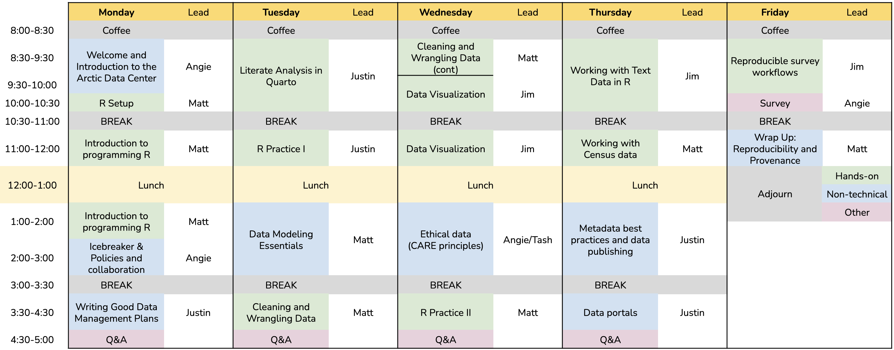

Fundamentals in Data Management for Qualitative and Quantitative Arctic Research
January 27-31, 2025


About the course
This 5-day in-person workshop will provide researchers with an overview of reproducible and ethical research practices, steps and methods for more easily documenting and preserving their data at the Arctic Data Center, and an introduction to programming in R. Special attention will be paid to qualitative data management, including practices working with sensitive data. Example datasets will draw from natural and social sciences, and methods for conducting reproducible research will be discussed in the context of both qualitative and quantitative data. Responsible and reproducible data management practices will be discussed as they apply to all aspects of the data life cycle. This includes ethical data collection and data sharing, data sovereignty, and the CARE principles. The CARE principles are guidelines that help ensure open data practices (like the FAIR principles) appropriately engage with Indigenous Peoples’ rights and interests.
Week’s Schedule

Code of Conduct
By participating in this activity you agree to abide by the NCEAS Code of Conduct.
About this book
These written materials are the result of a continuous and collaborative effort at NCEAS to help researchers make their work more transparent and reproducible. This work began in the early 2000’s, and reflects the expertise and diligence of many, many individuals. The primary authors are listed in the citation below, with additional contributors recognized for their role in developing previous iterations of these or similar materials.
This work is licensed under a Creative Commons Attribution 4.0 International License.
Citation: Matthew B. Jones, Angie Garcia, Nicole Greco, Justin Kadi, Jim Regetz (2025), Fundamentals in Data Management for Qualitative and Quantitative Arctic Research. Arctic Data Center & NCEAS Learning Hub. URL https://learning.nceas.ucsb.edu/2025-01-arctic.
Additional contributors: Ben Bolker, Amber E. Budden, Julien Brun, Samantha Csik, Halina Do-Linh, Natasha Haycock-Chavez, S. Jeanette Clark, Julie Lowndes, Stephanie Hampton, Samanta Katz, Erin McLean, Bryce Mecum, Casey O’Hara, Deanna Pennington, Karthik Ram, Jim Regetz, Tracy Teal, Camila Vargas-Poulsen, Daphne Virlar-Knight, Leah Wasser.
This is a Quarto book. To learn more about Quarto books visit https://quarto.org/docs/books.